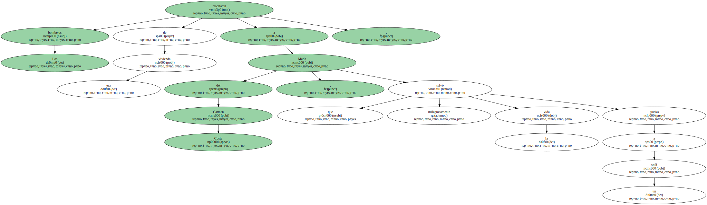
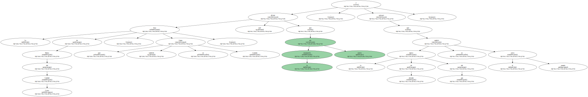

La policía considera que la explosión de gas que originó el derrumbe parcial del edificio de Horta el pasado miércoles fue provocada.
Los agentes sospechan de la mujer rescatada bajo un sofá nueve horas después.
La explosión causó tres muertos , que fueron enterrados ayer , y 10 heridos.
Fuentes de la investigación han señalado a este diario que el intento de suicidio de una vecina es la causa más probable de la tragedia.
Los expertos de la Policía Científica han descubierto varios cortes en la goma de la cocina del 2° 1ª del número 92 de la calle de Eduard Toda , que propiciaron una gran fuga de gas y la posterior explosión.
Los especialistas de la policía sostienen que se trata de cortes hechos de manera " deliberada " y " recientemente ".
Los bomberos rescataron de esa vivienda a María del Carmen Costa , que salvó milagrosamente la vida gracias a un sofá.
Ahora , la mujer se restablece de sus lesiones en el Hospital de Vall d'Hebron , donde hay internado otro vecino , éste herido de gravedad.
La hija de María del Carmen Costa , que también se llama Carmen , afirmó ayer que la instalación era nueva , y subrayó que la espita de entrada del gas se cambió el pasado julio.
La mujer rechazó toda responsabilidad de su madre en el siniestro.
La goma que conecta el electrodoméstico de esa casa a la instalación general gas era muy nueva.
Por eso , los técnicos descartan por completo que se trate de grietas originadas por el deterioro de la goma con el paso del tiempo o que se haya seccionado de forma accidental.
Les extraña también que la cocina apareciera girada del revés ( de cara a la pared ) , lo que despertó las sospechas policiales.
" No hay duda de que fue manipulada exprofeso " , señalaron fuentes próximas al caso.

Fuentes de Gas Natural corroboraron este extremo.
CUBERTERÍA INCAUTADA.
Los investigadores están convencidos de que alguien cortó deliberadamente esa goma con ayuda , seguramente , de un cuchillo.
Esto explica que la policía se haya incautado de toda la cubertería de la casa para verificar con precisión el utensilio empleado.
Además , ha precintado todos los escombros en busca de más pruebas.
La policía ha informado verbalmente al Juzgado de Instrucción número 17 , que ha abierto una causa sobre los hechos.
Los especialistas de la policía esperan tener redactado su informe en unos días.
OTROS INTENTOS DE SUICIDIO.
Los expertos policiales han informado al juez de que la presunta responsable de la explosión tiene " bastantes antecedentes " por intentos de suicidios.
Según los investigadores recibía atención psiquiátrica a causa de una depresión.

Algunos vecinos ya revelaron esos problemas como posible explicación del suceso.
Veinte familias de las 24 afectadas regresaron anoche a sus hogares , tras dormir en hoteles.
El alcalde , Joan Clos , prometió a los afectados la " máxima presión " para activar la reconstrucción del edificio , en una visita al lugar de la explosión.